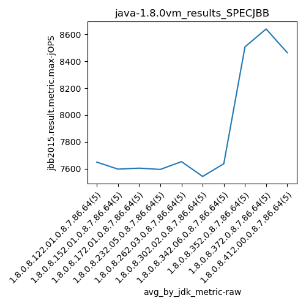
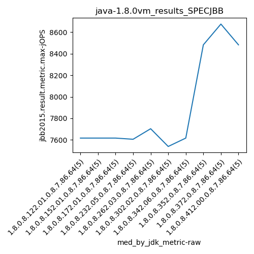
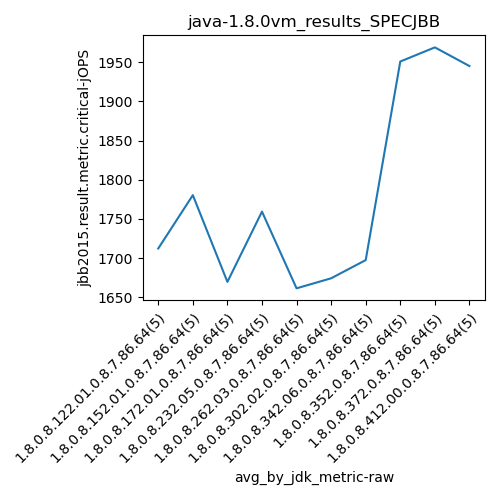
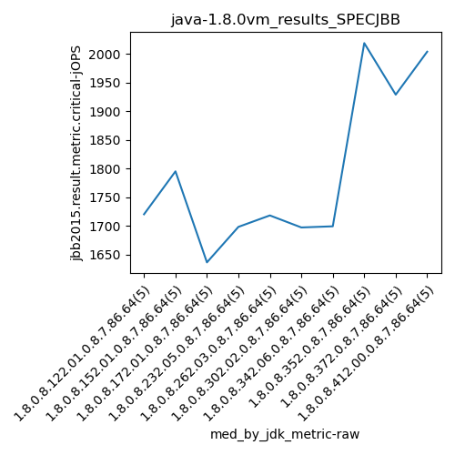
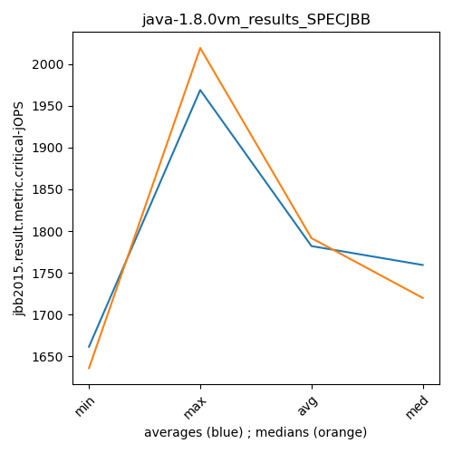

java-1.8.0 SPECJBB
Context at bottom
/home/jvanek/git/benchmarks-in-nested-virtualisation-toolchain/final_results/vm_results/vm_results_RADARGUNs1
java-1.8.0
SPECJBB
/home/jvanek/git/benchmarks-in-nested-virtualisation-toolchain/final_results/vm_results/vm_results_RADARGUNs3
java-1.8.0
SPECJBB
/home/jvanek/git/benchmarks-in-nested-virtualisation-toolchain/final_results/vm_results/vm_results_DACAPO
java-1.8.0
SPECJBB
/home/jvanek/git/benchmarks-in-nested-virtualisation-toolchain/final_results/vm_results/vm_results_J2DBENCH
java-1.8.0
SPECJBB
/home/jvanek/git/benchmarks-in-nested-virtualisation-toolchain/final_results/vm_results/vm_results_SPECJBB
java-1.8.0
SPECJBB
vm_results_SPECJBB
- vm_results_SPECJBB - max-jops
- vm_results_SPECJBB - critical jops
vm_results_SPECJBB - max-jops
Expected number of java-1.8.0 JDKs: 10
1st avgmed_alljdks_metric:
/home/jvanek/git/benchmarks-in-nested-virtualisation-toolchain/final_results/result_processing.py /home/jvanek/git/benchmarks-in-nested-virtualisation-toolchain/final_results/vm_results/vm_results_SPECJBB jbb2015.result.metric.max-jOPS False
values: [7781, 7519, 7808, 7519, 7616, 7616, 7519, 7519, 7712, 7616, 7459, 7616, 7712, 7616, 7616, 7423, 7605, 7712, 7712, 7519, 7519, 7703, 7712, 7616, 7712, 7538, 7614, 7326, 7519, 7712, 7631, 7519, 7616, 7802, 7616, 8513, 8483, 8387, 8483, 8676, 8711, 8661, 8676, 8483, 8676, 8290, 8580, 8483, 8194, 8776]

Expected number of iterations: 5
final number of values: 50 out of 50
Pass rate: 100.0%
values: (7326, 8776, 7888.84, 7712)

** accuracy from all jdks and runs
more is better
MIN: 7326
MAX: 8776
AVG: 7888.84
MED: 7712
Relative differences 1:
MIN-MAX: 17.0 %
MIN-AVG: 7.0 %
MIN-MED: 5.0 %
MAX-MIN: -20.0 %
MAX-AVG: -11.0 %
MAX-MED: -14.0 %
AVG-MED: -2.0 %
stored to java-1.8.0.properties. sort | uniq that!
2nd avgmed_by_jdk_metric:
values: [7648.6, 7596.4, 7603.8, 7594.2, 7652.4, 7541.8, 7636.8, 8508.4, 8641.4, 8464.6]

values: [7616, 7616, 7616, 7605, 7703, 7538, 7616, 8483, 8676, 8483]

values: (7541.8, 8641.4, 7888.839999999999, 7648.6)
values: (7538, 8676, 7895.2, 7616)

** accuracy from all jdks where runs were avged
more is better
MIN: 7541.8
MAX: 8641.4
AVG: 7888.839999999999
MED: 7648.6
Relative differences 1:
MIN-MAX: 13.0 %
MIN-AVG: 4.0 %
MIN-MED: 1.0 %
MAX-MIN: -15.0 %
MAX-AVG: -10.0 %
MAX-MED: -13.0 %
AVG-MED: -3.0 %
stored to java-1.8.0.properties. sort | uniq that!
** accuracy from all jdks where runs were medianed
more is better
MIN: 7538
MAX: 8676
AVG: 7895.2
MED: 7616
Relative differences 1:
MIN-MAX: 13.0 %
MIN-AVG: 5.0 %
MIN-MED: 1.0 %
MAX-MIN: -15.0 %
MAX-AVG: -10.0 %
MAX-MED: -14.0 %
AVG-MED: -4.0 %
stored to java-1.8.0.properties. sort | uniq that!
vm_results_SPECJBB - critical jops
Expected number of java-1.8.0 JDKs: 10
1st avgmed_alljdks_metric:
/home/jvanek/git/benchmarks-in-nested-virtualisation-toolchain/final_results/result_processing.py /home/jvanek/git/benchmarks-in-nested-virtualisation-toolchain/final_results/vm_results/vm_results_SPECJBB jbb2015.result.metric.critical-jOPS False
values: [1659, 1720, 1822, 1624, 1737, 1819, 1795, 1783, 1699, 1806, 1636, 1868, 1705, 1597, 1543, 1698, 1935, 1671, 1675, 1818, 1563, 1728, 1718, 1559, 1740, 1609, 1712, 1712, 1642, 1697, 1699, 1830, 1580, 1595, 1784, 2070, 2019, 1715, 1848, 2102, 1889, 1790, 2131, 2105, 1929, 1794, 2009, 2004, 1910, 2008]

Expected number of iterations: 5
final number of values: 50 out of 50
Pass rate: 100.0%
values: (1543, 2131, 1782.02, 1740)

** accuracy from all jdks and runs
more is better
MIN: 1543
MAX: 2131
AVG: 1782.02
MED: 1740
Relative differences 1:
MIN-MAX: 28.0 %
MIN-AVG: 13.0 %
MIN-MED: 11.0 %
MAX-MIN: -38.0 %
MAX-AVG: -20.0 %
MAX-MED: -22.0 %
AVG-MED: -2.0 %
stored to java-1.8.0.properties. sort | uniq that!
2nd avgmed_by_jdk_metric:
values: [1712.4, 1780.4, 1669.8, 1759.4, 1661.6, 1674.4, 1697.6, 1950.8, 1968.8, 1945.0]

values: [1720, 1795, 1636, 1698, 1718, 1697, 1699, 2019, 1929, 2004]

values: (1661.6, 1968.8, 1782.02, 1759.4)
values: (1636, 2019, 1791.5, 1720)

** accuracy from all jdks where runs were avged
more is better
MIN: 1661.6
MAX: 1968.8
AVG: 1782.02
MED: 1759.4
Relative differences 1:
MIN-MAX: 16.0 %
MIN-AVG: 7.0 %
MIN-MED: 6.0 %
MAX-MIN: -18.0 %
MAX-AVG: -10.0 %
MAX-MED: -12.0 %
AVG-MED: -1.0 %
stored to java-1.8.0.properties. sort | uniq that!
** accuracy from all jdks where runs were medianed
more is better
MIN: 1636
MAX: 2019
AVG: 1791.5
MED: 1720
Relative differences 1:
MIN-MAX: 19.0 %
MIN-AVG: 9.0 %
MIN-MED: 5.0 %
MAX-MIN: -23.0 %
MAX-AVG: -13.0 %
MAX-MED: -17.0 %
AVG-MED: -4.0 %
stored to java-1.8.0.properties. sort | uniq that!
/home/jvanek/git/benchmarks-in-nested-virtualisation-toolchain/final_results/vm_results/vm_results_JMH
java-1.8.0
SPECJBB
pass rates:
vm_results_SPECJBB=100.0%
Context:
- vm_results
- SPECJBB